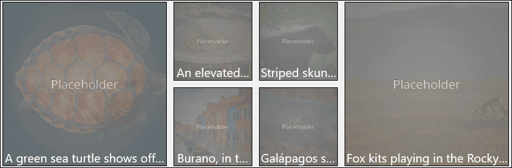

ImageEx (Archived)
Warning
This document has been archived and the component is not available in the current version of the Windows Community Toolkit.
This component was deprecated in WCT 7.x as it can be built piecemeal using platform features. While there are no immediate plans to port this component to 8.x, the community is welcome to express interest or contribute to its inclusion.
For more information:
Original documentation follows below.
The ImageEx control downloads images asynchronously, while showing a loading indicator. Source images are then stored in the application's local cache to preserve resources and load time. ImageEx also extends the default Image and ImageBrush Platform controls respectively to improve performance through caching. You can also use a placeholder image that will be displayed while loading the main image.
Syntax
<controls:ImageEx Name="ImageExControl" IsCacheEnabled="True"
PlaceholderSource="/assets/thumbnails/thumbnails.png"
Source="/assets/bigPicture.png" CornerRadius="20"/>
Sample Output

ImageEx Properties
| Property | Type | Description |
|---|---|---|
| NineGrid | Thickness | Gets or sets the nine-grid used by the image |
| IsCacheEnabled | bool | Gets or sets a value indicating whether gets or sets cache state |
| ImageExCachingStrategy | enum | Gets or sets a value indicating how the Image will be cached |
| CornerRadius | double | Get or set the radius of image corner |
| EnableLazyLoading | bool | Gets or sets a value indicating is lazy loading enabled. |
| LazyLoadingThreshold | double | Gets or sets a value indicating the threshold for triggering lazy loading. Default value is 300 px. |
Sample Project
ImageExControl Sample Page Source. You can see this in action in the Windows Community Toolkit Sample App.
Default Template
- ImageEx Control XAML File is the XAML template used in the toolkit for the default styling.
Requirements
| Device family | Universal, 10.0.16299.0 or higher |
|---|---|
| Namespace | Microsoft.Toolkit.Uwp.UI.Controls |
| NuGet package | Microsoft.Toolkit.Uwp.UI.Controls |